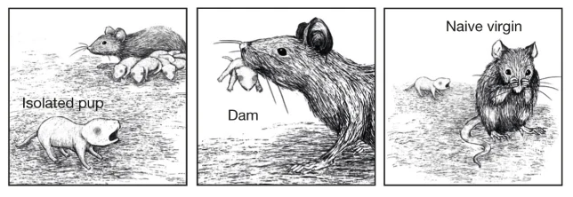
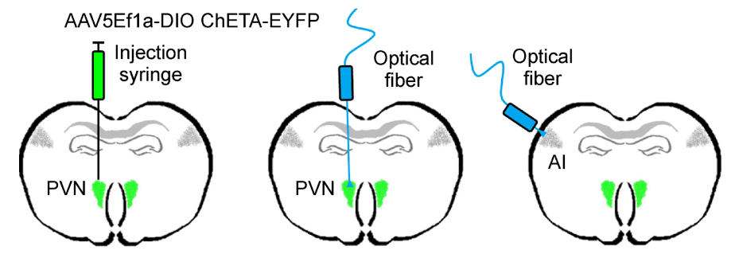

Parental Care
Contents
Parental Care¶
Neural Mechanisms¶
Video recording to guide you through the questions in Part 1 (Neural Mechanisms)
In preparation for today’s class, you listened/watched Dr Jones Marlin discuss here paper: Marlin et al (2015) Oxytocin enables maternal behaviour by balancing cortical inhibition.
In mice, a communication system has evolved between pups and mothers so that when a pup produces a distress call, the mother will orient to the pup and go to retreive it back to the nest. However, this communication system is only active in females once they have become mothers (or after being co-housed with experienced and successfully-retreiving mothers).
{kind=link}
We know that circulating levels of oxytocin hormone increase in females with childbirth, which is correlated with these changes in parental care. Could oxytocin be directly involved as a hormonal mechanism of parental care behavior? And if so, what neural mechanisms does it act on? Marlin et al found that oxytocin receptors were concentrated in the left auditory cortex (compared to the right) but that receptor expression levels do not change with parental care experience.
{kind=link}
Fig. 149 Oxytocin receptors expression in left and right auditory cortex of virgin and mother (dams) females.¶
⏳ 5 min
Q1: Compare and contrast this with the hormonal mechanisms explaining different mating systems in voles.
⏸️ PAUSE here for class-wide discussion
Optogenetics is a technique used in neuroscience to enable the depolarization or hyperpolarization of specific neural populations in the brain. Ion channels that are gated by (opened by) light of a specific wavelength can be expressed in specific sets of cells that are uniquely genetically defined.
{kind=link}
Fig. 150 The gene that you want transcribed is placed after a lox-P-flanked STOP codon in one parent. The gene that you want to control it’s spatial expression pattern is used to activate CRE transcription in another parent. When those two parents are mated, their offspring will express the gene that you want transcribed in any of its cells that contain CRE.¶
{kind=link}
Fig. 151 These ion channels are designed so that they open when they absorb light of a specific wavelength. Because this is not a native neural mechanism, it enables neural activity to be experimentally controlled.¶
The light-gated ion channels can also be expressed in all cells within specific regions of the brain when injected locally using a viral vector (which was the method used by Marlin et al).
Marlin et al expressed a light-gated depolarizing ion channel (ChETA; using the sequence lox-stop-lox-ChETA) in PVN neurons using Oxt-IRES-Cre animals (expresses CRE under control of endogenous oxytocin, which is in PVN neurons).
{kind=link}
They could then depolarize PVN neurons; either at the cell body or at the axon terminals within in specific target regions (ie. the auditory cortex).
First, they stimulated PVN cell bodies to release endogenous oxytocin (and perhaps other co-factors).
{kind=link}
Fig. 152 A) Percent of initially naive females that retrieve at least once during the first 12 hours of co-housing with experienced dams. B) Cumulative retrieval during co-housing under the three different conditions tested (systemic injection of oxytocin, release of endogenous oxytocin from PVN, and systemic injection of saline).¶
Note that parental care is being quantified by measuring the percent of tested animals in each experimental cohort that retreive pups.
⏳ 5 min
Q2: What do you infer about the neural and hormonal mechanism of parental care based on the saline condition results?
⏸️ PAUSE here for class-wide discussion
Stimulating PVN axon terminals themselves enabled them to understand something about the neural mechanism specifically of parental care in addition to the hormonal mechanism. If they had only stimulated the PVN neuron cell bodies, then they would not know what part of the brain was being modulated as a result of the oxytocin release because PVN neuron axons project throughout the brain. By stimulating axon terminals only in the left auditory cortex, they showed that hormonal effects on that brain region alone was enough to turn naive virgins into retreiving caregivers.
So what is oxytocin doing to the neurons in auditory cortex? What more specifically are neural mechanisms of parental care? They quantified the magnitude and precision of auditory cortex spiking responses to pup calls.
{kind=link}
Fig. 153 Neural and hormonal mechanisms of parental care. A) Increased maternal care (pup retrieval) is associated with a change in the neural encoding of (ie. response to) pup calls in the left auditory cortex. C,D,E) Changes in spike rate and temporal precision (trial-to-trial correlation in spiking activity pattern) is specific for pup calls rather than general to all auditory stimuli. F) Pairing pup calls with oxytocin release in the left auditory cortex (starting at time 0) is sufficient to induce neural responses like those in experienced Dams (black = average across both types of oxytocin administration).¶
Therefore, changes in parental care can be explained by long-lasting neural sensitivity to pup calls, which is driven by (transiently) increased oxytocin levels in new mothers.
Genetic Mechanisms¶
Video recording to guide you through the questions in Part 2 (Genetic Mechanisms)
In preparation for today’s class, you also read: Bendesky et al (2017) The genetic basis of parental care evolution in monogamous mice. Bendesky et al knew that two species of Peromyscus mice with very different mating and parental care behavior could interbreed (from the genetic basis of burrowing behavior already done in Hoekstra’s lab). Importantly, differences in parental care could be quantified and therefore correlated with genetics.
⏳ 20 min
{kind=link}
Fig. 154 (Figure 1a from Bendesky et al) Phylogeny of selected Peromyscus species, including a character mapping of mating systems.¶
Q3: Based on the phylogeny and character mapping shown in Figure 1a, was monogamy or promiscuity the ancestral trait of the last common ancestor for Peromyscus? Provide a quantitative argument for your conclusion based on the principle of parsimony.
{kind=link}
Fig. 155 (Figure 3 from Bendesky et al) a, Genetic cross design. Female P. maniculatus were mated to P. polionotus males to found the cross (see Methods); the behaviour of females and males of each species is shown here for comparison. b–e, Violin plots show the distribution of behaviours in each generation. Each dot represents the mean behaviour of an animal over three trials.¶
Q4: Based only on the results of Figure 3 (Fig 155 here), how did the authors conclude that parental care behavior likely involves more than one gene?
Q5: Based on results reported in Bendesky et al, which behaviors would you conclude are the most genetically linked with each other? Which Figure/Panel are you relying on most to decide this?
Bendesky et al measured the transcription of a set of genes from the nest-quality QTL region of Chromosome 4 and found that AVP (vasopressin) hormone was transcribed at much higher levels in P. maniculatus than in P. polionotus (Figure 5b).
Bendesky et al then experimentally manipulated the AVP hormone levels in P. polionotus and found the following (Figure 5c).
{kind=link}
Fig. 156 (Bendesky et al Figure 5c) Parental behaviours of P. polionotus after vehicle, 100 ng vasopressin (AVP), or 100 ng oxytocin (OXT) intracerebroventricular administration. Each individual (grey) is connected by lines. Red and blue circles with whiskers indicate mean ± s.e.m. * P < 0.05; ** P < 0.01; NS, not significant by Friedman followed by Dunn’s test compared with vehicle.¶
Q6: Consider the results shown in Figure 5c from Bendesky et al (Fig 156 here), if you block AVP from binding to AVP receptors (using an “antagonist”) in P. maniculatus, do you predict that they will then make good nests or do you predict no change in their parental care behavior? Why?
Q7: Based on the results presented in Bendesky et al 2017, would you infer that AVP receptor distribution was the same or different between the brains of P. polionotus and P. maniculatus? Why?
⏸️ PAUSE here for class-wide discussion
So… Bendesky et all found a genetic polymorphism affecting a neuromodulator (hormone) that contributes to variation in parental behavior across species (ie. contributes to the behavioral evolution of parental care).
Evolutionary Mechanisms¶
Case Study: brood parasitism
{kind=link}
Fig. 157 A reed warbler parent that has been parasitized by a cuckoo feeds the comically obvious heterospecies chick.¶
{kind=link}
Fig. 158 From Lotem et al. (1993)¶
“My model will be falsified if nestling discrimination is exhibited by hosts in which only the parasitic nestling remains in the nest, and if discrimination in this case is learned.”
“The model does not explain why hosts cannot recognize their nestlings innately. But it is doubtful whether the common forms of innate recognition could be sufficiently effective to reject a single cuckoo nestling. An innate response to key releasers is often stimulated by a broad range of stimuli that only slightly resemble the ‘correct’ one.”
Additional Resources¶
Bendesky, A., Kwon, YM., Lassance, JM. et al. The genetic basis of parental care evolution in monogamous mice. Nature 544, 434–439 (2017).